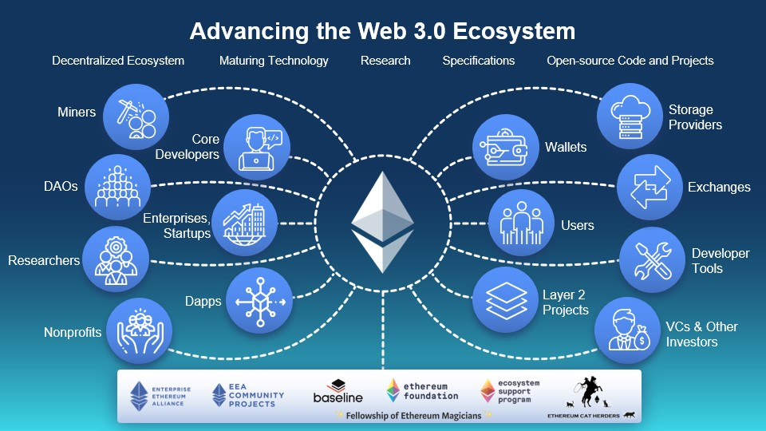

คอนเซ็ปต์ของ Web 3.0 เป็นอย่างไร?
องค์ประกอบในระดับรากฐานที่สำคัญสองประการของ Web 3.0 คือ Semantic Web และปัญญาประดิษฐ์ (Artificial Intelligence: AI)
ดังนั้นเมื่อใช้ประโยชน์จากสองสิ่งนี้ อัลกอริทึม (Algorithm) จะวิเคราะห์, ตีความ และประเมินข้อมูลจากกิจกรรมของฝั่งผู้ใช้งานสำหรับการเสนอข้อมูลอื่น ๆ เพิ่มเติม โดยเน้นไปที่เนื้อหาที่เกี่ยวข้องกับความสนใจของผู้ใช้งานเป็นหลัก และมีความโปร่งใสกว่า Web 2.0นอกจากนั้น ในแง่ของผู้สร้างสรรค์ผลงานและองค์กร การใช้งาน Web 3.0 ยังช่วยให้ผู้ใช้งานสามารถลดค่าใช้จ่ายด้านค่าบริการจากบุคคลที่สาม และอาจเป็นจุดเริ่มต้นในการเปลี่ยนแปลงกลยุทธ์ของธุรกิจประเภทดังกล่าวอีกด้วย ยิ่งไปกว่านั้น การเปลี่ยนแปลงใด ๆ บนเครือข่ายจะสามารถปรับเปลี่ยนได้ง่ายขึ้น ทำให้องค์การต่าง ๆ สามารถสื่อสารกันระหว่างองค์กร โดยตัวองค์กรเป็นผู้กำหนดระบบจัดการข้อมูลระหว่างผู้ที่เกี่ยวข้องเองได้ การแชร์ข้อมูลจะมีความเป็นส่วนตัวและปลอดภัยมากขึ้นจากการดำเนินการแบบ Peer-to-Peer และยังเพิ่มในด้านความสามารถในการตรวจสอบกิจกรรมการลงทุนเพื่อเป็นการช่วยลดความเสี่ยงจากการพึ่งพาแพลตฟอร์มต่าง ๆ กล่าวคือ ผู้ใช้งานมีสิทธิความเป็นเจ้าของเหนือสินทรัพย์ดิจิทัล, ข้อมูลส่วนตัว และ Digital Footprint ที่เกิดขึ้นจากกิจกรรมบนเครือข่ายของแต่ละบุคคล โดยการทำให้เป็น Digital Scarcity และการแปลงสินทรัพย์เป็นโทเคนดิจิทัล (Tokenized Digital Asset)

ที่มา